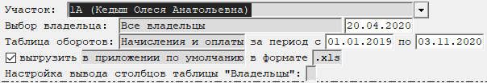

Бланк "Карточка участка"
Данный бланк предназначен для отображения данных по участку и данных по начислениям и оплатам (рис. 1).

Рис. 1. Бланк "Карточка участка"Рассмотрим поля, доступные для заполнения:
-
Участок - выбирается участок.
-
Выбор владельца - указывается, о каких владельцах необходимо вывести данные. Доступны следующие варианты - Все владельцы, Текущий владелец на указанную дату. Для варианта Текущий владелец на указанную дату необходимо указать дату справа от графы.
-
Вывод таблицы - настройка вывода таблицы. Доступны следующие варианты - Начисления и оплаты, Только начисления, Только оплаты, Не выводить.
-
за период с ... по ... - указывается период для вывода таблицы оборотов.
-
выгрузить ... в формате ... - позволяет выгрузить на диск таблицу через указанное приложение в указанном формате.
-
Настройка вывода столбцов таблицы "Владельцы" - указывается, какие данные необходимо вывести в таблицу.
После заполнения полей, влияющих на расчет, необходимо пересчитать бланк.
Для этого нажмите кнопку
 на панели инструментов,
клавишу F9, или комбинацию клавиш Ctrl + Enter.
на панели инструментов,
клавишу F9, или комбинацию клавиш Ctrl + Enter.
После пересчета на экране отобразятся таблицы с данными участка, владельцев и оборотами.